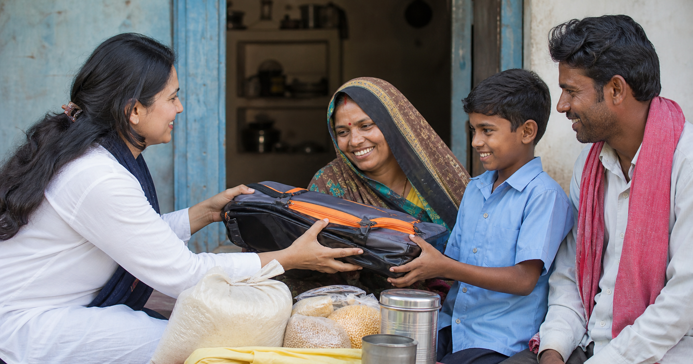

Mission
To support sustainable social and economic transformation through education, healthcare, and community development programs in India and abroad.
A charitable trust serving India through education support, healthcare outreach, community development, and direct public communication.
CBN Trust channels volunteer energy, supporter goodwill, and practical coordination into service for people in need.
The trust focuses on three ground-level needs: keeping children connected to education, supporting healthcare access, and strengthening families through community development and livelihood support.
Supporters and volunteers can connect directly with the trust office for verification, program updates, and service coordination.

To support sustainable social and economic transformation through education, healthcare, and community development programs in India and abroad.
A prosperous, educated, and healthy society where families can access support with dignity and no community is left behind.
Direct contact helps supporters and volunteers verify details with the trust office before acting.
Coordinates trust communication, supporter inquiries, volunteer inquiries, and program-related guidance for CBN Trust.
Trust is earned through clarity, service, and responsible communication.
Clear communication, visible programs, and responsible trust coordination.
Built with families, volunteers, partners, and supporters in India and abroad.
Education, healthcare, and livelihoods that move families toward stability.
CBN Trust presents its charitable work in education, healthcare, and community development within a broader development vision associated with Sri Nara Chandrababu Naidu.


CBN Trust is a registered charitable trust focused on education, healthcare, and community development, not electoral activity. Its programs serve communities regardless of political affiliation.
Funds are directed toward program delivery, coordination, and beneficiary support, with receipts and transfer records handled through the trust office.
Verify directly with G.ABHINETHRA using +91 9494947330, and match bank transfers to Account Name CBN TRUST, Account Number 42975982199, IFSC Code SBINOO16857, Bank Name SBI MG RODE VIJAWDA.